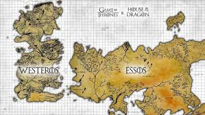

Stroyline Introduction:
Game of Thrones is an epic fantasy TV series based on George R.R. Martin's A Song of Ice and Fire novels. It takes place in the fictional continents of Westeros and Essos, where several noble families vie for control of the Iron Throne and, by extension, the Seven Kingdoms.
The primary plotlines include:
- War of the Five Kings: power struggle among noble families after the death of King Robert Baratheon. Key families like the Lannisters, Starks, and Baratheons seek to control the Iron Throne.
- The Rise of Daenerys Targaryen: Exiled across the Narrow Sea, Daenerys is the last surviving member of the former ruling dynasty. Over time, she gathers an army, dragons, and aims to reclaim the Iron Throne.
- The Threat of the White Walkers: An ancient race of ice beings threatens all life beyond and within Westeros. Led by the Night King, they slowly move south, raising an army of the dead, forcing rival houses to unite against this existential threat.
As the story unfolds, alliances shift, characters face betrayal, war, and power struggles, all against the backdrop of prophecies, ancient magic, and the overarching question of who will finally rule Westeros. Key themes include political intrigue, betrayal, and the harsh reality of power.
Review:
Game of Thrones is a groundbreaking television series that blends political intrigue, fantasy elements, and complex characters in a way that captivated audiences worldwide. Based on George R.R. Martin’s A Song of Ice and Fire novels, the show starts strong with intricate plotlines and deep world-building. The power struggles between noble houses like the Starks, Lannisters, and Baratheons for the Iron Throne are set against a backdrop of looming threats from supernatural forces, like the White Walkers and Daenerys Targaryen's growing strength across the sea. Each character is carefully fleshed out, with motivations and arcs that often blur the lines between heroism and villainy, making them unpredictable and compelling.
The show is notable for its rich storytelling and moments of shocking violence or betrayal, like the infamous Red Wedding. The early seasons are highly praised for staying true to Martin's complex narrative style, with slow-building tension and character growth. However, in the later seasons, especially after the show overtakes the books, the pacing accelerates, leading to what many fans see as rushed character arcs and plot conclusions. The final season, in particular, was controversial for its rapid resolution of key storylines, leaving some viewers unsatisfied. Despite this, Game of Thrones remains a cultural phenomenon that set new standards for production value, with stunning visual effects, battle sequences, and intricate political drama.
In essence, while its conclusion may have disappointed some, the show's impact on television is undeniable. It brought together fantasy, political intrigue, and human drama in a way that had rarely been seen before. Its exploration of power, loyalty, and morality, along with unpredictable deaths and shifting alliances, ensured that viewers were constantly on edge, never sure what would happen next. Game of Thrones pushed the boundaries of what TV could achieve, earning its place as one of the most ambitious and talked-about series in modern history.
Main Characters:
- John Snow: Jon Snow is introduced as the illegitimate son (bastard) of Ned Stark, living at Winterfell. Though loved by his family, he feels like an outsider because of his unclear parentage. Early in the series, Jon joins the Night's Watch, an ancient order tasked with guarding the northern borders of the realm. His story takes him on a journey that questions his identity and destiny.
- Daenerys Targaryen: Daenerys is first seen in exile with her older brother Viserys in the Free Cities across the Narrow Sea. She is introduced as the last surviving member of the deposed Targaryen dynasty, initially meek and controlled by her brother, who arranges her marriage to the Dothraki warlord Khal Drogo. Over time, Daenerys transforms into a strong and determined leader with ambitions to reclaim the Iron Throne.
- Tyrion Lannister: Tyrion, the youngest son of the wealthy and powerful House Lannister, is introduced as a sharp-witted dwarf often looked down upon by his family and society. Known for his cleverness, love of books, and sharp tongue, Tyrion is constantly underestimated but proves to be one of the most astute and resourceful players in the game of politics.